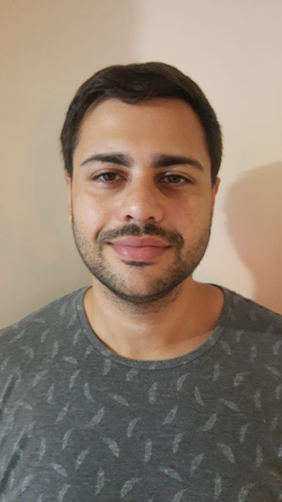

Hoja de vida - Juan Ignacio Eliseo Zapata

Datos personales
- Nombre: Juan Ignacio Eliseo
- Apellido : Zapata
- Nacionalidad : Argentino
- Fecha de Nacimiento: 28/09/93
- Estado civil: Casado
Formacion
Curso Diseño Web (IPFL 204)
Curso Programacion Web (IPFL 204)
Curso de Programacion (IPFL 204)
Curso Argentina Programa TICMAS
Curso de Ingles basico
Experiencia Laboral
Trabajo en el area de Neurofisiologia de la clinica Pueyrredon desde el 2018,
realizando Electroencefalogramas, polisomnografias y VideoEEG.
Contacto
Telefono: 2235596618
mail: juandmbg@gmail.com